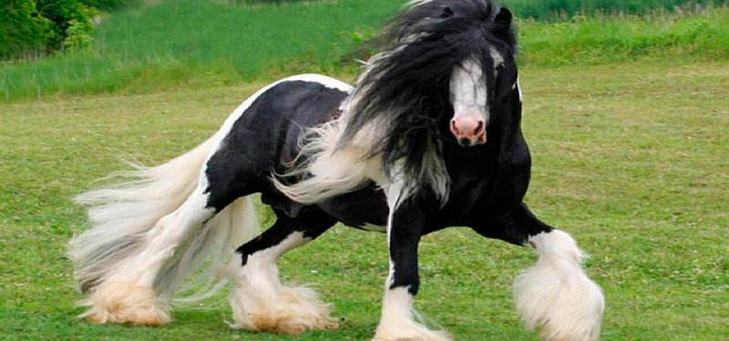
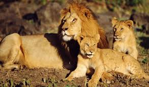
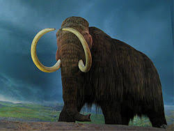

En la clasificación científica de los seres vivos, el reino Animalia o Metazoa constituye un amplio grupo de organismos que son eucariotas, heterótrofos, pluricelulares y tisulares.
Se caracterizan por su amplia capacidad de movimiento, por no tener cloroplasto ni pared celular, y por su desarrollo embrionario; que atraviesa una fase de blástula y determina un plan corporal fijo. Los animales forman un grupo natural estrechamente emparentado con los hongos.
Animalia es uno de los cuatro reinos del dominio Eukaryota, y a él pertenece el ser humano. Los filos animales más conocidos aparecen en el registro fósil durante la denominada explosión cámbrica, sucedida en los mares hace unos 542 a 530 millones de años.
  
| Caballos | León Africanos | Mamut |